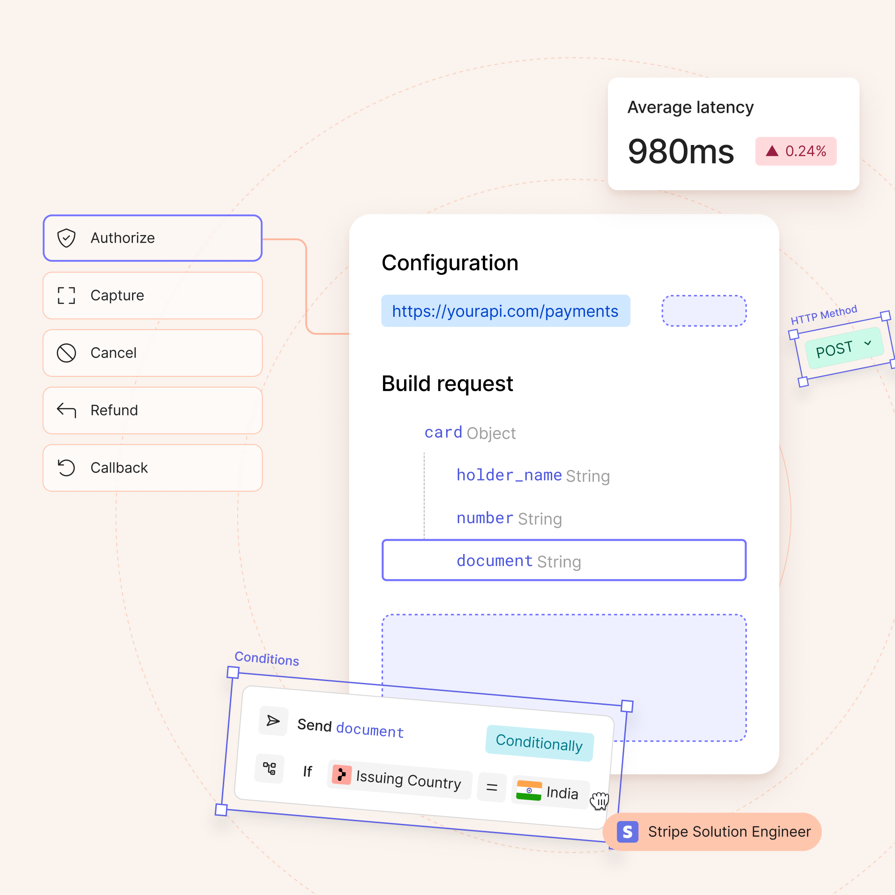
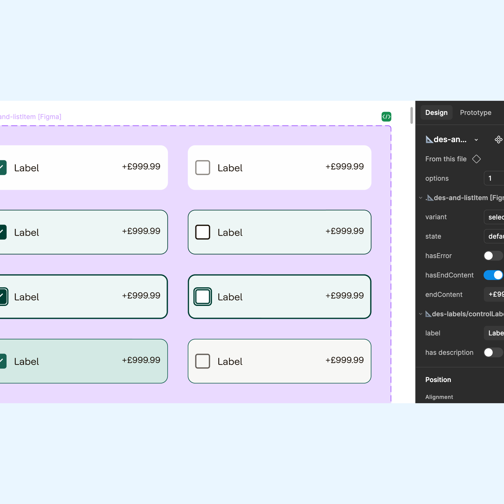
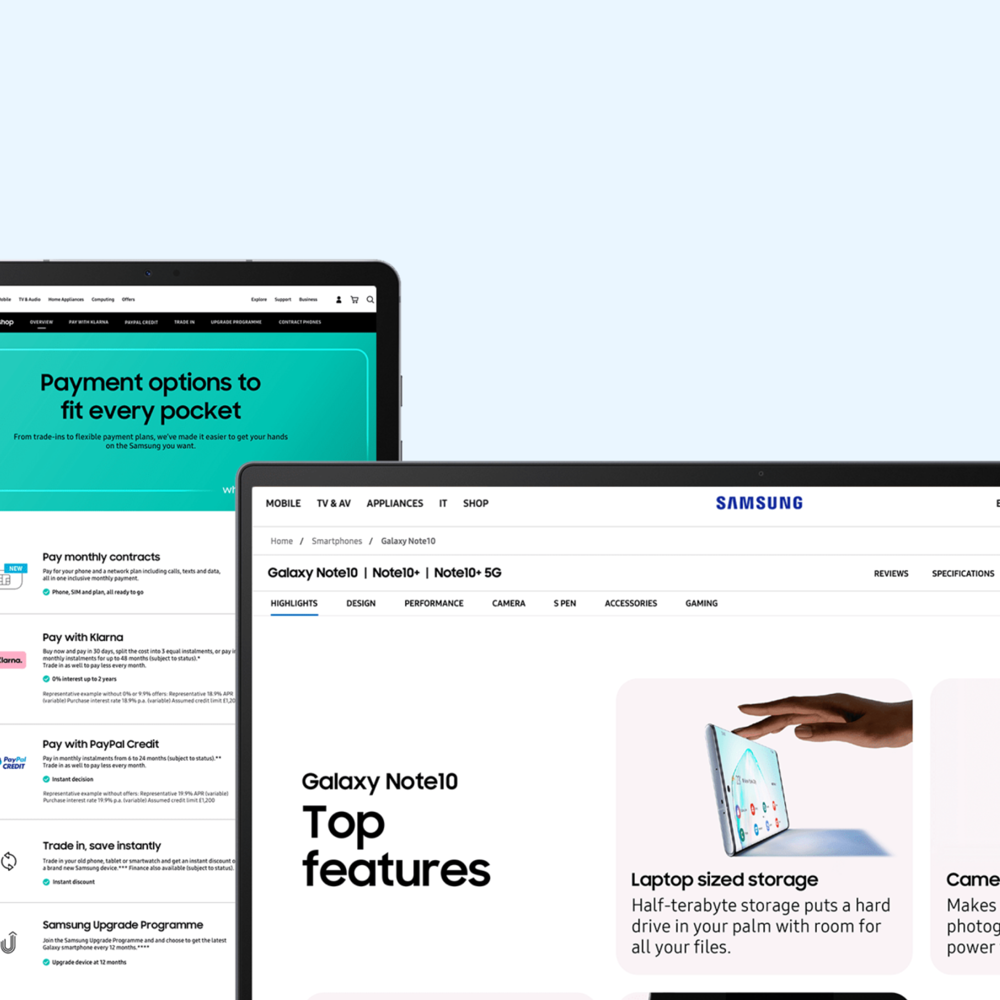

Hi, I'm Duncan 👋 a UK-based product designer with 8 years experience, currently at
Primer
.

Building a no-code editor
Latest
Primer, 2025-Present
Improving customer experience
Dojo, 2022–2025
Growing a cycling community
Global Cycling Network, 2020-2022
More Projects

Pando Design System
Dojo, 2022-2025

Optimising Samsung.com
BBH London, 2018-2020